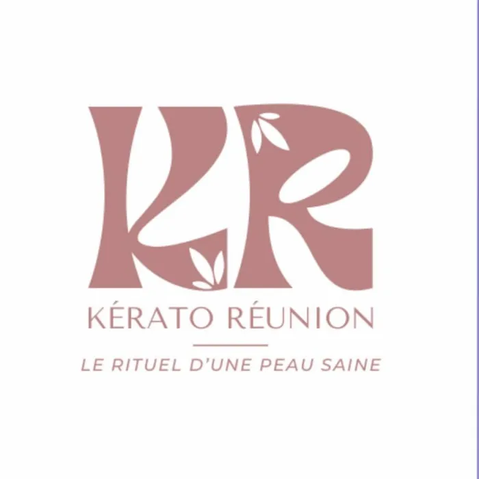

La maison
Une peau saine, un rituel à soi
Chez Kérato Réunion, chaque soin suit un fil : comprendre votre peau, choisir la bonne gamme, puis prendre le temps. Des soins correctifs Dr Janka aux soins bio Oxalia, tout est pensé pour une peau qui respire.
Les soins
Cinq rituels, de la tête aux mains
- 01
Soins correctifs Dr Janka
Des soins du visage ciblés, avec la gamme Dr Janka.
- 02
Soins bio Oxalia
Des soins du visage bio, certifiés Cosmos Organic, tout en douceur.
- 03
Épilation Epiloderm
L'épilation à la cire végétale Epiloderm.
- 04
Massages relaxants
Un temps de détente pour relâcher les tensions.
- 05
Ongles & maquillage
Vernis laque, semi-permanent et maquillage.
Dans la cabine
La gamme Oxalia
Des soins bio fabriqués en France, aux noms qui donnent déjà envie de s'installer.
Faites glisser pour voir les soins · Photos : page Facebook Kérato Réunion
À la une · 5 novembre 2026
« Retrouvez-moi chez Coiffure les Alizés à l'Entre-Deux »Publication partagée sur la page Facebook Kérato Réunion. Les créneaux se calent directement avec l'institut.
Offrir pour Noël
Offrez un rituel Kérato
La carte cadeau Kérato Réunion : un soin à offrir, à glisser sous le sapin pour une maman, une amie, une sœur.
Commander une carte cadeauRendez-vous
Votre moment vous attend
0693 00 53 09Entre-Deux · 97414